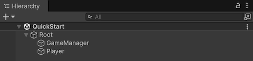
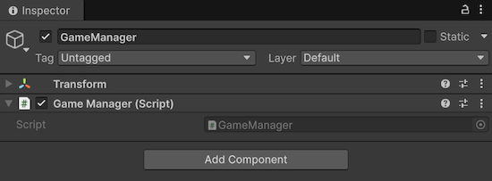
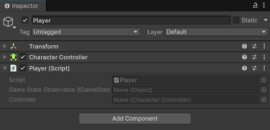
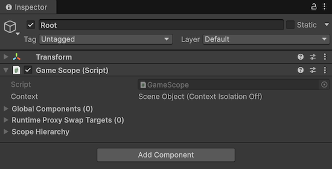
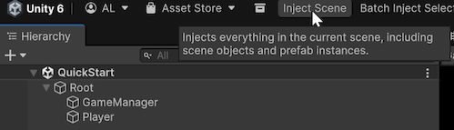
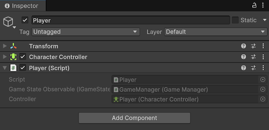

Quick start
This page walks through a minimal Saneject setup in one scene and shows how to run your first injection. It should take around 5 minutes.
For prerequisites and installation methods, see Installation & requirements.
1. Create the scene hierarchy
- Create a
GameObjectnamedRoot. - Create a child
GameObjectnamedGameManagerunderRoot - Create a child
GameObjectnamedPlayerunderRoot. - Add
CharacterControllertoPlayer.

2. Create a component to inject
Create GameManager.cs.
using UnityEngine;
public interface IGameStateObservable
{
}
public class GameManager : MonoBehaviour, IGameStateObservable
{
}
Attach it to GameManager.

3. Create an injection target
Create Player.cs. Player is partial because [SerializeInterface] uses generated code to serialize interface references.
using Plugins.Saneject.Runtime.Attributes;
using UnityEngine;
public partial class Player : MonoBehaviour
{
[Inject, SerializeInterface]
private IGameStateObservable gameStateObservable;
[Inject, SerializeField]
private CharacterController controller;
}
Attach it to Player.

4. Create a scope and declare bindings
Create GameScope.cs and declare bindingsBindingInstruction declared in a Scope that tells Saneject what to resolve, how to inject it, and where to search.:
You can create a scopeScopeMonoBehaviour that declares bindings for a part of your hierarchy. manually or from:
- Main menu:
Saneject/Create New Scope - Project window context menu:
Assets/Saneject/Create New Scope
using Plugins.Saneject.Runtime.Scopes;
public class GameScope : Scope
{
protected override void DeclareBindings()
{
// Find first GameManager that implements IGameStateObservable anywhere in the scene
BindComponent<IGameStateObservable, GameManager>()
.FromAnywhere();
// Find first CharacterController on the injection target (Player) Transform
BindComponent<CharacterController>()
.FromTargetSelf();
}
}
Attach it to Root.

Scope is where bindingsBindingInstruction declared in a Scope that tells Saneject what to resolve, how to inject it, and where to search. are declared. During injection, Saneject resolves each [Inject] site from the nearest Scope, with fallback to parent scopesScopeMonoBehaviour that declares bindings for a part of your hierarchy..
5. Run injection
Run dependency injection via the main toolbar button Inject Scene.

After injection, Player has serialized values for gameStateObservable and controller. Enter Play Mode and the scene runs without a runtime container.

Inspector integration note
Saneject includes a custom MonoBehaviour inspector that keeps injected and serialized interfaceSerialized interfaceSerializeInterface member (IService, IService[], or List<IService>) that Saneject persists through a generated hidden Object backing member. fields ordered and preserves Saneject's intended inspector UX.
If the inspector looks wrong or incomplete, another custom inspector or plugin is likely overriding Saneject.
In that case, either disable the conflicting inspector or integrate Saneject's inspector API in your custom inspector to restore the Saneject inspector UX.
See MonoBehaviour inspector and Saneject inspector API for details.